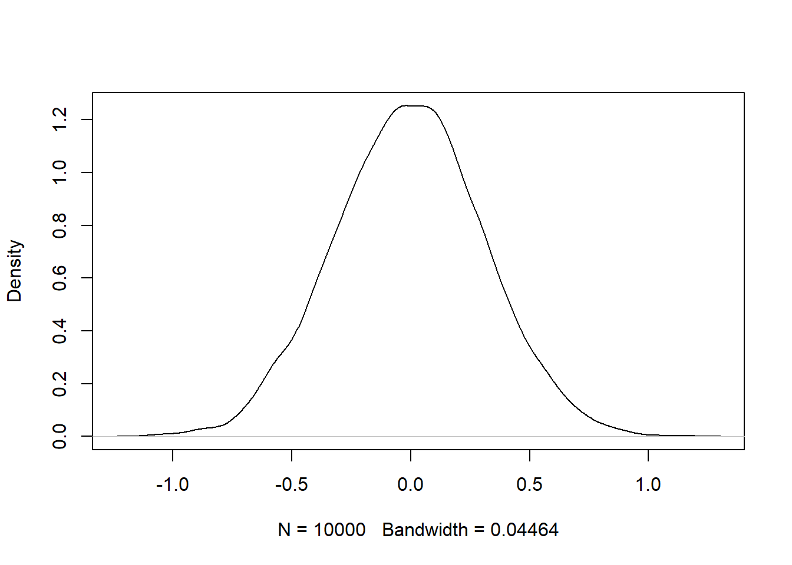

6 Simulations
6.1 Motivation
When we are analyzing data, there is always going to be some degree of uncertainty, as there is randomness in a lot of phenomena that we observe in our world. An example that is common in statistics comes from the field of sample surveys. A poll is conducted to see what proportion of voters will vote each candidate in an upcoming election. Even with a well-designed poll and a large sample size, the value of the sample proportion that will vote for a candidate has some randomness to it. If we get another random sample, the sample proportion is likely to be different (but hopefully close). The act of obtaining a random sample, or sampling, from a population introduces some randomness.
Statisticians and data scientists often want to investigate the degree of randomness involved in what is being studied. You may realize in the previous paragraph that one way of studying the randomness in polls is to repeatedly obtain random samples. But it is practically unfeasible to repeatedly go out in the field to collect data.
This is why simulations are used. We can simulate the studies many times (in the thousands, at least) with computers without spending time and money and repeating these studies physically.
You will see how sampling introduces randomness and then learn how to create simulations to quantify the degree of randomness or uncertainty.
6.2 Sampling
The sample() function in R randomly draws a selected number of items from a list of items (the list is usually a vector), and the probabilities of each item being selected are the same for all items. A simple example of randomness is tossing a fair coin a set number of times (equal chance of landing heads or tails).
## [1] "heads" "heads" "heads" "tails" "heads"The sample() function has three main arguments:
- A vector of values from which to sample.
- How many values from the vector to draw.
- If you want to sample with or without replacement.
Sampling with replacement means that when we sample a value from the vector, the value gets returned to the vector and can be sampled again.
Sampling without replacement means that means that when we sample a value from the vector, the value does not get returned to the vector and cannot be sampled again.
Run the code in the block above a few times. You will notice that the returned vector is not always the same, so the result is unpredictable. This is unlike most of the earlier code you have seen in the course notes.
Another use of sampling is in model validation (i.e. assessing model accuracy). The original data set is randomly split into two mutually exclusive data sets: one called training and the other called test. The training set is used to build the model, and model assessment is done on the test set. Suppose we want to split the Davis data set from the carData package.
library(carData)
Data.Davis <- carData::Davis
n <- dim(Data.Davis)[1]
## when dim() is applied to a dataframe, two values get returned
## the num of rows and number of columns. The number of rows is
## equal to the sample size
trainInd <- sample(1:n, size = ceiling(n/2), replace = FALSE)
## each observation belongs to a row. So randomly select half of
## row indexes without replacement so the two sets are mutually ## exclusive
## split data into training and test
trainData <- Data.Davis[trainInd,]
testData <- Data.Davis[-trainInd,]You have also seen sampling before in Section @red(distributions), where functions such as rnorm() and rbinom() draw random numbers from known probability distributions such as the normal and binomial distributions. Try typing rnorm(10) a few times. You should get a vector containing 10 random draws from a standard normal, and the vectors are not always the same.
6.3 Replicate
You have seen how sampling is inherently random. In order to quantify the uncertainty introduced through sampling, we want to be able to repeat, or replicate, the sampling a lot of times.
Suppose we want to do the following to investigate the uncertainty associated with the sample mean when the data follows a standard normal distribution, based on samples size 10. You could write code to do the following:
- Draw a random sample of 10 from a standard normal distribution.
- Compute the sample mean of this sample of 10 and store it.
- Repeat the previous two steps for large number of times, say 10,000 times.
- Create a visualization to show the distribution of these 10,000 sample means, or calculate some values such as the mean, variance, and so on.
From section @ref(), you may think of using a for loop to execute these.
## Repeat for total 10,000 times
Reps <- 10000
## pre allocate vector to store the 10,000 sample means
sampleMeans <- c(NA, Reps)
for (i in 1:Reps){
## draw 10 numbers from standard normal, find the mean, and store
sampleMeans[i] <- mean(rnorm(10))
}Intuitively, we know the sample means from each sample are different. We can print out a few of these values to confirm this idea.
head(sampleMeans)## [1] -0.30823015 -0.12775532 0.41992670 0.09275484 0.01503494 0.21408720We can create a density plot of the 10,000 sample means to visualize the uncertainty from sampling. We can see in figure 6.1 that most of the sample means are close to 0, and values further from 0 are less likely to occur.

Figure 6.1: Density Plot of Sample Means from 10,000 Random Samples of Size 10